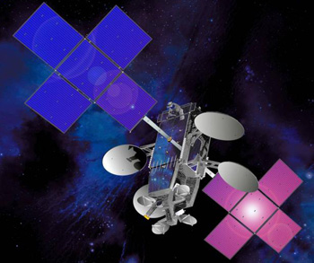
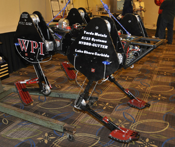
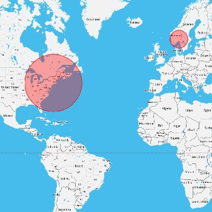

Software Engineer
(Under Construction)
Resume (PDF)

Projects and Work
ViaSat, Inc. (2010-Present)
 ViaSat produces innovative satellite and other digital communication products that enable fast, secure, and efficient communications to any location. We bring today's new communication applications to people out of reach of terrestrial networks, in both the commercial and government sectors, with a variety of networking products and services.
I work in the Acceleration Research and Technology division, where we develop AcceleNet - a WAN optimization and acceleration tool.
As an intern, I created a system to launch and manage 50-100 virtual machines to monitor and test ViaSat products; and worked with a small team to port AcceleNet to the Android platform, improving browser-based Web speed on Android by 50-60% and reducing bandwidth by 15-25%.
As a full time employee, I performed sustaining tasks to investigate and fix errors and faults in AcceleNet and related products. I worked with a large team to design and develop a management interface for a Linux port of AcceleNet, responsible for handling configuration, performance monitoring, high-availabiltiy, and fault management. I also worked with a small group to create a CI/CD model for AcceleNet builds/releases. This included developing a parallel, non-recursive build system, which decreased build times from 2 hours to 10 minutes.
Sabertooth Robotics (2010-2011)
 Team Sabertooth aimed to design and realize an innovative high mobility, quadrupedal robot platform capable of delivering a payload over terrain otherwise impassable by wheeled vehicles at a speed of 5 feet per second. Specifically, the robot is designed to be able to ascend and descend straight stairs with a predetermined gait. The robot uses a spring system in each of its legs for energy efficient locomotion. The 4ft x 3ft x 3ft freestanding four legged robot weighs approximately 300 pounds with an additional payload capacity of 30 pounds. An important feature of the robot is the passive, two degree of freedom body joint which allows flexibility in terms of robot motions for going around tight corners and ascending stairs. The sensor system integrates a LIDAR, an IMU and a camera for staircase recognition, obstacle avoidance, and distance calculation. A distributed control and software architecture is used for world mapping, path planning and motion control.
ChessMate
ChessMate is an open source chess engine written in C++ with a game-playing GUI written in Java. The engine uses a bitboard representation of the chess board and uses an iterative min-max algorithm with alpha/beta pruning to decide what move to make. Behind the scenes, an asynchronous socket system and a messaging system is used to communicate to clients. It is written to compile and run on both Windows and Linux operating systems. For Windows, Visual Studio project files are provided. For Linux, an easy to use, parallel, GNU-Make based build system is provided.
Where is Anton? (Source)
 A friend of mine is basically never in the country. If he had a dollar for every time someone asked where he is, I could've charged him for this app.
This project has two parts: an Android app for him to update his status, and a web app to show his location.
The web app is hosted on Google's app engine. It consists of a database to store locations, an API to provide read/write access to that database, and a Django app which uses that API to display locations. The default view of the app is the most recent location in the database. There are also features to view all locations and location clusters. When viewing all locations, paths between consecutive points are computed with quadratic Bezier curves, drawn to indicate travel direction. Path collision is detected to avoid drawing overlapping paths. Location clusters are calcuated using k-median clustering, with initial centroids aproximated using the k-means++ algorithm.
The Android app uses Android's geolocation service to get the current location, and display it on a Google Map instance. It uses the web app's API to post that location to the database when desired. It also includes an auto-update feature to download and install the lastest version of the app.